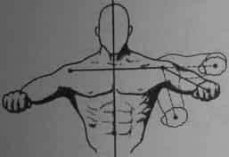
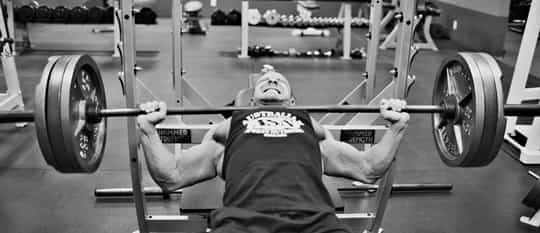

David is a strength coach and bestselling Men's Health author. You can follow him at HowToBeast.com.


The bench press is probably your favorite lift. At the very least, if you lift weights consistently, I’m sure you perform it often enough.
Unfortunately I have to assume that you’re doing it wrong. Every time I walk into a gym and glance over at the horde of men surrounding the bench press, I’m disappointed, if not completely abhorred. Their form tends to be horrible. And this is concerning for two reasons:
1. Bad bench press form combined with relatively heavy weights can lead to brutal injuries, like tearing a rotator cuff or pectoral muscle.
2. It doesn’t properly engage your muscles—you won’t experience increased strength or muscle mass if you’re not recruiting your muscles in a functional pattern that complements their natural movement.
I’ve sufficiently fucked up my shoulder in the past by letting my ego get in my way, and lead me to putting more weight on the bar than I could properly lift. Putting an extra 50 pounds on the bar is not even close to worth the pain and suffering it can cause. Below I’ll detail the most common bench press mistakes, and explain how to fix them. If you do this you’ll both reduce the risk of injury, and also supercharge your progress in the process.
NOTE: Always use a spotter when pressing a weight that is even remotely difficult for you, neglecting to do so could be fatal.
Your wrists should be tight, as seen on the right.
When you lay down on the bench, you want to get your whole body tight. This gives you a stable base to press from, and therefore increases how much weight you can lift in a controlled fashion.
If you’re just laying on the bench like you’re about to take a rest, this will put you in a terrible spot to begin the lift. You want to squeeze your shoulder blades together so that they’re the main point of contact in between your body and the bench, tighten your midsection, squeeze your ass, plant your feet firmly against the floor, and then grasp the barbell with a tight grip.
And all of these things should remain tight throughout. Your feet shouldn’t dance around, your grip shouldn’t loosen, and neither should your ass or shoulder blades.
If you set up correctly but fuck up the un-racking of the bar, you immediately sacrifice the aforementioned benefits that a tight setup grants you.
You do NOT want to lift the bar straight up and then move it over your chest. This will cause your shoulder blades to loosen and separate. What you want to do, instead, is to pull the bar horizontally from the rack to over your chest, lifting it up vertically only enough to clear the rack. This will maintain that shoulder blade tightness that’s so important from this point forward.

Your elbows should be in roughly the middle position shown above.
As you perform the lift, your elbows should NOT stick out directly sideways, forming a 90 degree angle with your torso. This puts you shoulders in an extremely compromised position. Instead they should tuck in slightly so that the bar touches roughly just below nipple level at the bottom of the lift.

The bar should make contact with the chest at the bottom of every repetition.
Once a little guy came up to me and asked me to spot him. He had 225 pounds on the bar, and told me that his goal was 8 reps. This seemed quite a lot for someone of his small stature, so I eagerly watched, curious to see if he possessed an unusual amount of strength. He didn’t. Each time he lowered he bar it didn’t even come within 3 or 4 inches of his chest. He was doing, at most, 66% of the repetition. And he only did 5 of them.
This is the most obvious mistake you see in the gym. You want each rep to continue all the way down until the bar touches your t-shirt. I say t-shirt because it should NOT rest on, or worse, bounce off of your chest. It should reach chest level, and then explode up until your arms are straight (but shoulder blades remain back).
This is a mistake that can just as easily apply to squats, deadlifts, or any other lifts. But it will destroy your bench press just the same. You shouldn’t hold your breath. And you shouldn’t breath shallow breaths either. Poor breathing can lead to a loose body and also passing out (which could kill you if you’re holding a heavy bar over your head).
You should breathe a deep breath that fills your abdomen at the top of each repetition. This breath should be held as the bar lowers, and even as it changes direction. Once you’re on the way up, exhale as your exert yourself and finish the repetition.
For a complete approach to building muscle and cutting fat, check out my new program Shredded Beast.
Read Next: 3 Habits That Every Man Should Practice